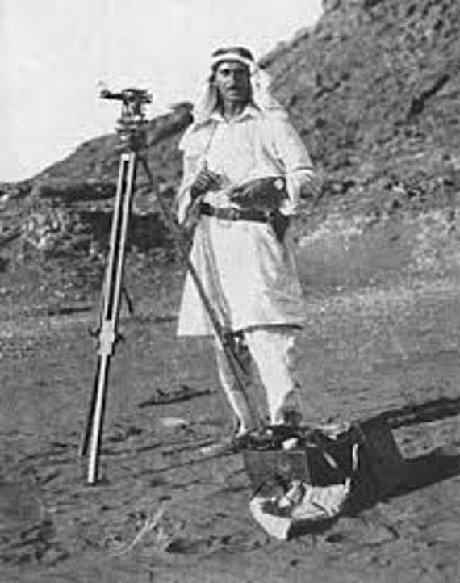
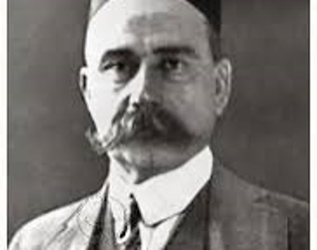

Grandesexploradores.
Tres hombres que abrieron rutas, trazaron los primeros mapas fiables y desvelaron los secretos del Sáhara egipcio y libio.

Ahmed Hassanein Bey
Explorador, diplomático, fotógrafo y escritor egipcio. Nacido en El Cairo y formado en Oxford.
En 1923 cruzó el Desierto Líbico desde Siwa hasta Kufra, cartografiando zonas del Sáhara libio que nunca se habían trazado. Publicó sus hallazgos en The Geographical Journal y National Geographic.
Más tarde fue jefe de la Casa Real egipcia y consejero del rey Faruq.

Príncipe Kamal el Dine Hussein
Miembro de la familia real egipcia, apasionado de la arqueología y la geografía del desierto.
Entre 1920 y 1924 financió y dirigió expediciones por el Sáhara que dieron lugar a algunos de los primeros mapas precisos del Desierto Líbico.
Fue mecenas de exploradores y de la Sociedad Geográfica de Egipto.
László Almásy
Explorador, aviador y aventurero húngaro, inspiración de El paciente inglés.
Desde los años treinta exploró el Sáhara oriental en coche y en avioneta, y descubrió la Cueva de los Nadadores en el Gilf Kebir, con sus pinturas prehistóricas.
Durante la Segunda Guerra Mundial sirvió al Eje en el norte de África como piloto y agente de inteligencia.
Ciencia, aventuray diplomacia.
Entre los tres abrieron rutas, elaboraron mapas y revelaron los secretos del Sáhara egipcio y libio. Su legado es la razón por la que hoy se puede seguir su rastro.
Varias de nuestras rutas cruzan los paisajes que ellos describieron. Pregúntanos por itinerarios inspirados en sus expediciones.
Siguesu rastro.
Cuéntanos tus fechas y cómo te gusta viajar. Te respondemos personalmente, normalmente en menos de un día, con una ruta y un presupuesto.